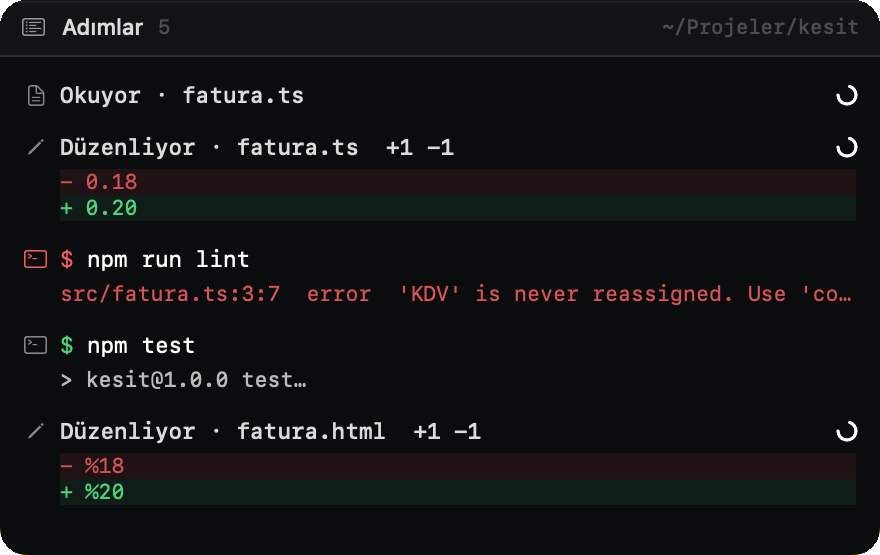
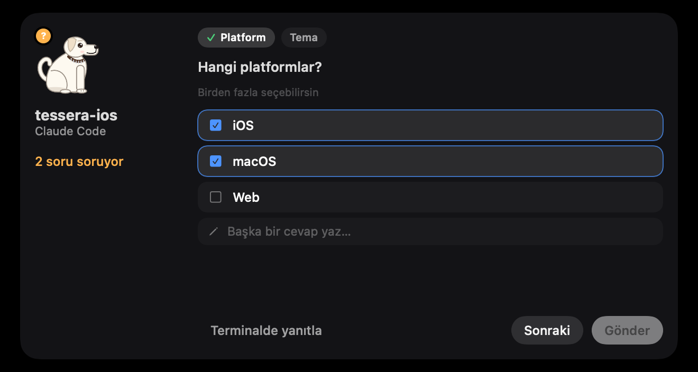
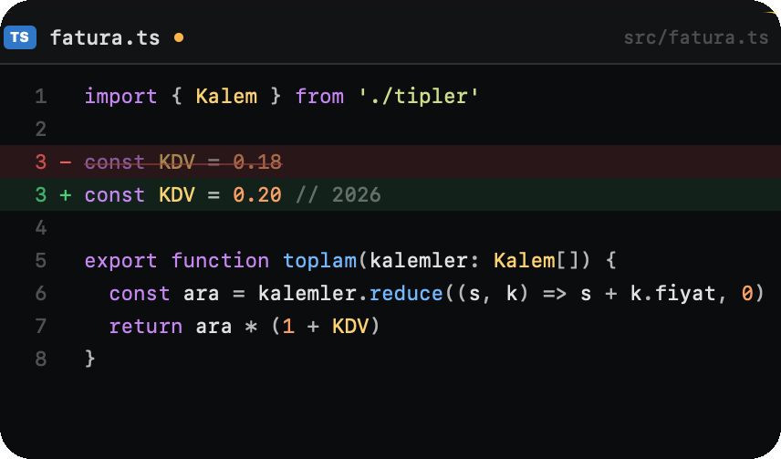
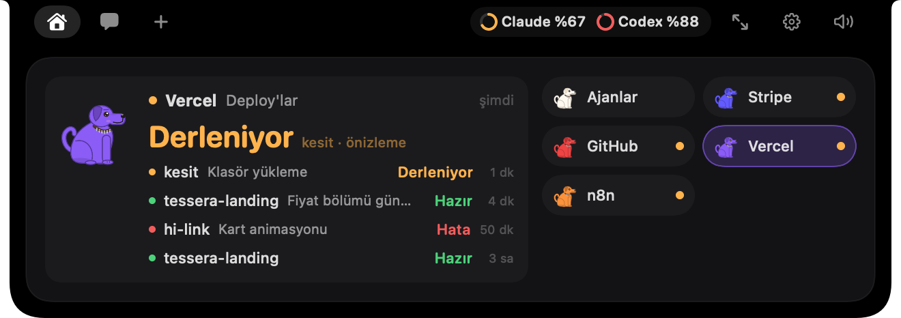
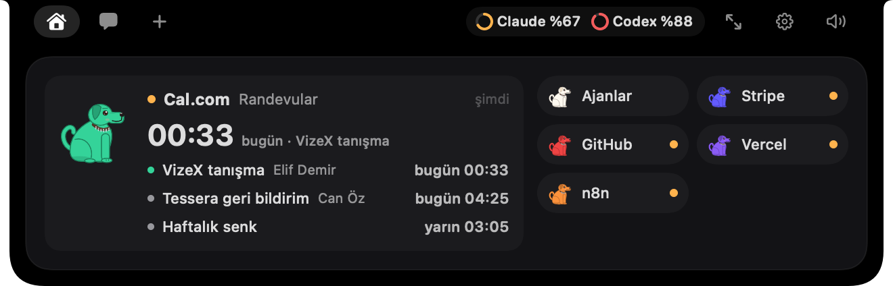
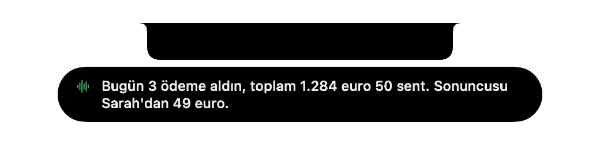
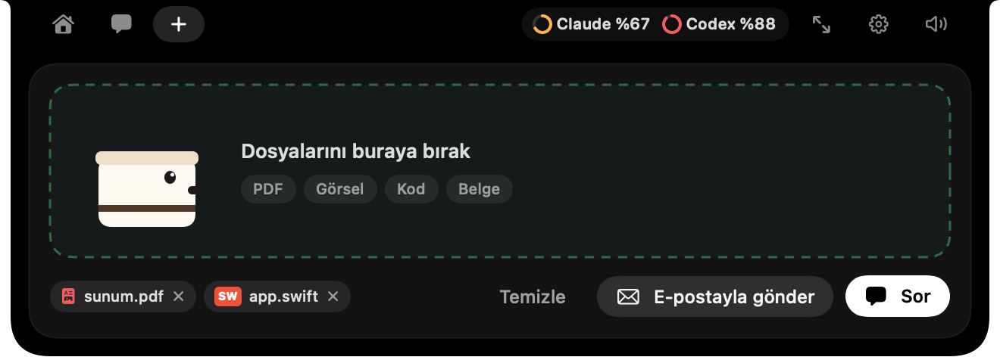

Terminalin artık
çentiğinde.
çentiğinde.
Pepe
Terminaldeki ajanların için çentikteki kontrol kulesi.

Terminalin arkada çalışırken
her adımı çentikten izle.
her adımı çentikten izle.

Okuduğu dosya, çalıştırdığı komut,
değiştirdiği satır. Canlı.
değiştirdiği satır. Canlı.

İzin mi istiyor?
Tek tıkla ver, akışın bozulmasın.
Tek tıkla ver, akışın bozulmasın.

Soru mu soruyor?
Cevabı çentikten seç.
Cevabı çentikten seç.

Neyi değiştirdiğini
satır satır gör.
satır satır gör.

İş bitince Pepe havlar.Terminal kapalı olsa da oturuma buradan devam edersin.

Codex, Cursor, Gemini CLI…
Bütün ajanların tek bakışta.
Bütün ajanların tek bakışta.
Paralel oturumlar · ayrı çalışma kopyaları




Stripe, GitHub, Vercel, Notion, n8n, Cal.com…
İşinin nabzı da çentikte.
İşinin nabzı da çentikte.
«OK Pepe» de.
Sesle sor, sesle cevap al.
Sesle sor, sesle cevap al.



Sabah brifingi, hatırlatıcılar, Trello…
Günün tek ekranda.
Günün tek ekranda.


Müziğin, dosyaların, sohbetin…
hepsi bir tık uzakta.
hepsi bir tık uzakta.

Ve evet, Pepe'yi giydirebilirsin.

Pepe
Terminalin, çentiğinde.
Canlı adımlarTek tıkla izinÇentikten cevapSatır satır diff
Paralel oturumlar«OK Pepe» sesli asistanStripe · GitHub · VercelSabah brifingi
Erken erişim hi@tahayerdekalmazer.com